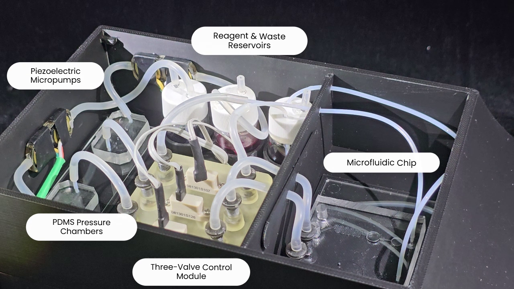

整合方向
原型串接方法設定、控制、影像與記錄；專案仍在開發。
Smart Stop-Flow
開發中的微流體整合原型，串接 ESP32-S3 幫浦／微閥控制、Android 方法設定、手機取像、ROI 分析與實驗紀錄。
01 / EVIDENCE

專案保存的開蓋實機照片，標出壓電微幫浦、試劑與廢液儲槽、PDMS 壓力腔、三閥控制模組及微流體晶片。管路與分區可用來理解驅動端、控制端和反應端如何整合；照片本身不證明流量、混合比例、停流時間或密封性能。
查看原圖 ↗原型串接方法設定、控制、影像與記錄；專案仍在開發。
工程工作另整合 KiCad、SolidWorks 與 COMSOL 設計資料，用於裝置與微流體介面。
實際流量、配比及停流時間需依晶片、管路與溶液條件校正。
02 / WALKTHROUGH
Android 設定實驗方法，ESP32-S3 以狀態機安排預壓、進樣、清洗與異常停止。BLE／Serial 負責控制連接，方法參數則需要和當次執行一起保存。
Room 記錄方法快照、控制事件與媒體索引，讓後續查看影像時能回到當次操作設定，而不是只剩下一段無法對照條件的影片。
手機取像與逐幀 ROI 分析用於觀察選定區域的影像變化。分析時需對照照明、影格時間與控制事件；發出停止命令的時間不等於液體真正停止流動的時間。
目前的實體整合與資料流程讓控制、觀察和紀錄有了共同入口。流量精度、混合效率或反應速率必須由對應濕式實驗支持，不能由 App 畫面或模擬取代。
03 / PURPOSE
讓進樣控制、停流觀察與資料保存能對應同一段實驗時間序列。
04 / ARCHITECTURE

Android 端設定實驗步驟，保存方法與操作所需的參數。
ESP32-S3 以狀態機安排幫浦與微閥序列，包含預壓、進樣、清洗和異常停止。
手機端串接照明、錄影、ROI 與逐幀分析，讓控制事件可對照影像。
Room 保存方法快照、事件與媒體索引，支援回看一次實驗實際用了什麼流程。
05 / WORKFLOW
設定步驟與時間，保存本次使用的方法快照。
控制幫浦／閥件執行流體步驟，同時追蹤當前狀態。
錄影並在指定 ROI 分析，將畫面對應控制階段。
以事件、媒體索引與方法快照整理一次實驗的紀錄。
06 / ANALYSIS
同一張影像可能位於進樣、等待或清洗。保留事件時間能讓 ROI 結果對應當時的實驗條件。
只保存目前的方法名稱不足以還原舊實驗；將當次步驟保存為快照，可以解釋不同次執行的差異。
幫浦命令完成後，液體仍可能受到死體積、彈性與背壓影響。停流效果應配合實際觀察與校正。
07 / REPRODUCE
08 / LIMITS
未公開、開發中。流量、配比及實際停流時間仍需濕式校正；仿生微流體平台的獎項不移用為本專案成果。
09 / SOURCES
入選圖像保留原始畫面內容，圖說分別註明原型照片、操作介面、歷史紀錄、分析輸出或模擬。